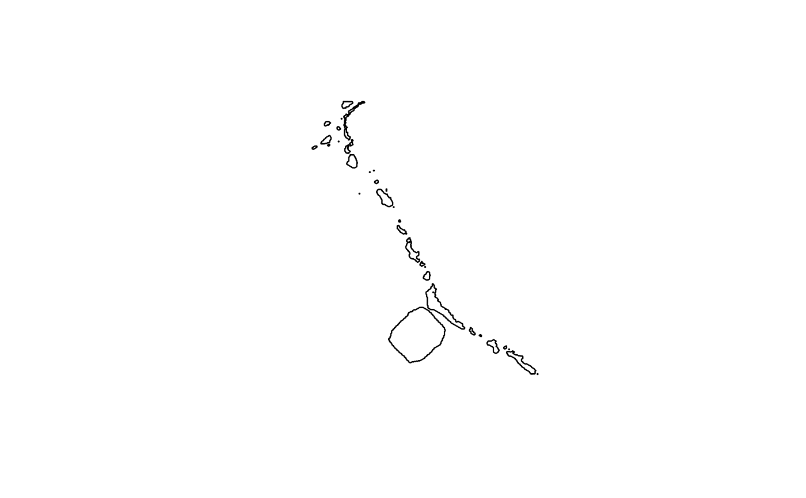

This function allows you to download the latest version of data available on the sernanp geoviewer. For more information, you can visit the following web page: Sernanp Platform
Arguments
- layer
Select only one from the list of available layers, for more information please use `get_data_sources(provider = "sernanp")`. Defaults to NULL.
- dsn
Character. Output filename with the spatial format. If missing, a temporary file is created.
- show_progress
Logical. Suppress bar progress.
- quiet
Logical. Suppress info message.
Examples
# \donttest{
library(geoidep)
library(sf)
anp <- get_sernanp_data(layer = "zonificacion_anp" , show_progress = FALSE)
#> Reading layer `file1f8074590b1' from data source
#> `/tmp/Rtmp3WuC5H/file1f8074590b1.geojson' using driver `GeoJSON'
#> Simple feature collection with 36 features and 7 fields
#> Geometry type: POLYGON
#> Dimension: XY
#> Bounding box: xmin: -83.12596 ymin: -18.39136 xmax: -70.49201 ymax: -3.385678
#> Geodetic CRS: WGS 84
plot(st_geometry(anp))

# }